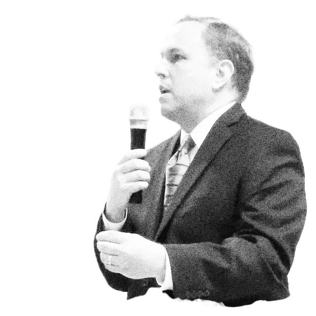

In just under four years as Mayor, John Bradberry has ushered in an unprecedented era of dishonesty, recklessness, and embarrassment in Johns Creek.
Mayor Bradberry inherited a well-run city that received national recognition for being one of America’s best places to live – what has Johns Creek City Hall been known for since he took over?
Mayor Bradberry’s administration has divided our City Council and alienated our hard-working city
employees. Since taking office, Johns Creek has had a staggering 50% turnover in staff. 140 of the
City’s 284 employees have left under his watch – this includes 70 employees from Public Safety, 8
from Finance, plus 7 key roles including:
• City Manager • Assistant City Manager • Finance Director
•Finance Manager
• Human Resources Director • Economic Development Director • Community
Development Deputy Director
His latest project, the highly controversial $90 million Performing Arts Center project, has divided
City Council and residents alike. But Mayor Bradberry is committed to forcing this project through
by whatever means necessary, even as local leaders, city officials, and concerned residents continue
to voice their objections.
But Mayor Bradberry’s refusal to listen to homeowners doesn’t stop there – most recently, the Mayor
muscled through a widely unpopular project to rezone 204 acres of agricultural land in the Shakerag
district to allow the construction of a massive new subdivision. The proposal violates the city’s
Comprehensive Land Use Plan. The Planning Commission recommended that the proposal be rejected.
Residents loudly protested.
Mayor Bradberry ignored them all.
Mayor Bradberry is under investigation by the Georgia Ethics Commission for numerous violations. He
has consistently been late with campaign finance disclosures and has unduly reimbursed himself with
taxpayer funds.
These investigations are ongoing.
You can read the ethics complaint for yourself here.
Mayor Bradberry has continuously broken promises to residents and taxpayers.
THE MAYOR SAYS: Johns Creek is financially healthy and fiscally responsible
THE TRUTH: The City’s debt is growing at an alarming rate. We currently have a $16 million
loan balance. We have the $40 million Parks bond – the parks aren’t completed, the money is gone,
and we will be paying it off for the next 22 years. Additionally, the City has a $550 thousand dollar paving debt it has yet to pay off.
On top of all of that, the Mayor wants to force even more debt with the $90 million Performing Arts
Center. If approved, this would leave the city with nearly $150 million dollars of total debt. We don’t need it and we can’t afford it.
We’re already dealing with the consequences of this reckless spending - $5.2 million in critical
services and $6.5 million in capital projects have been cut. Residents are now paying stormwater
utility fees. But Mayor Bradberry sees fit to keep the spending spree going.
THE MAYOR SAYS: Public Safety is his top priority.
THE TRUTH: There have been $5.2 million worth of requests from Public Safety that have gone
unfunded. Money is being moved from the Public Safety budget to fund the Performing Arts Center.
This should come as no surprise – in the Mayor’s own words “The Performing Arts Center is my number
one priority. These other things, we add when and if we can.”
The Performing Arts Center as a necessity, Public Safety “if we can.” What kind of priorities are
these, Mayor Bradberry?
“I’m all about the Performing Arts Center at the top for year after year for as long as it takes to pay for this.”
“I want to stay focused on the Performing Arts Center and until we’ve got that issue adjudicated, I can’t, I’m not going to get distracted with other things.”
“We know that this is probably never going to break even.”
“The Performing Arts Center is my number one priority. These other things, we add, when and if we can.”
“Yes, this is a big project, and, yes, there is some temporary crowding out.”